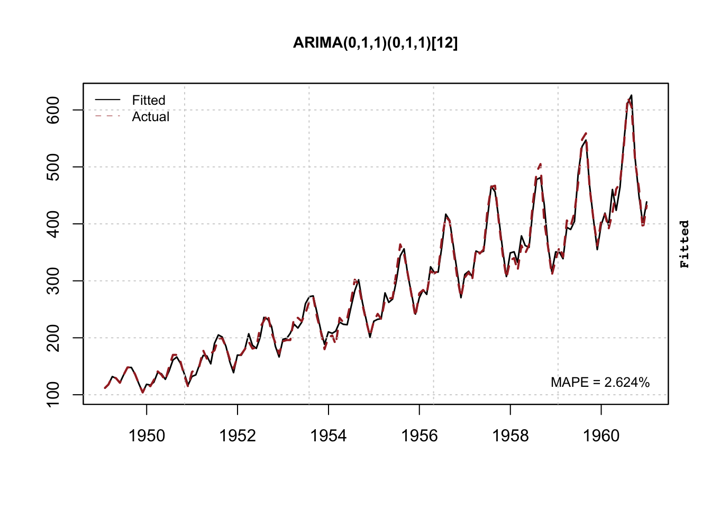
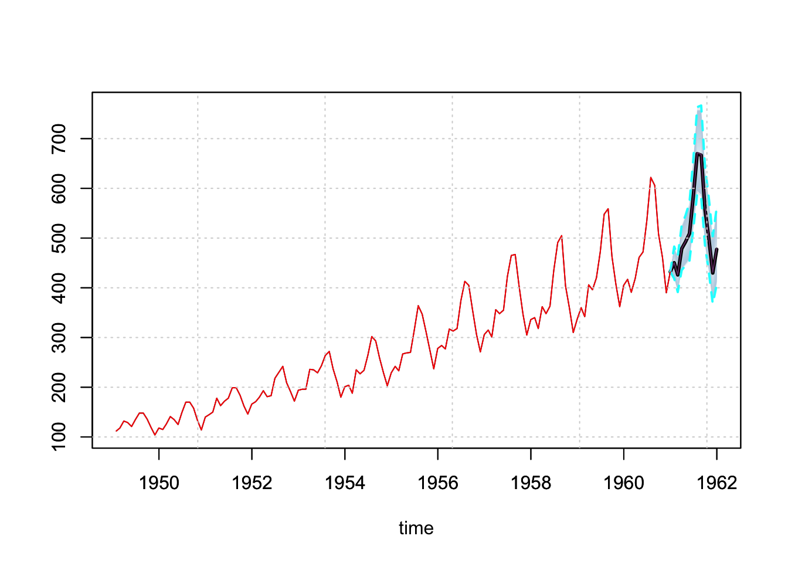
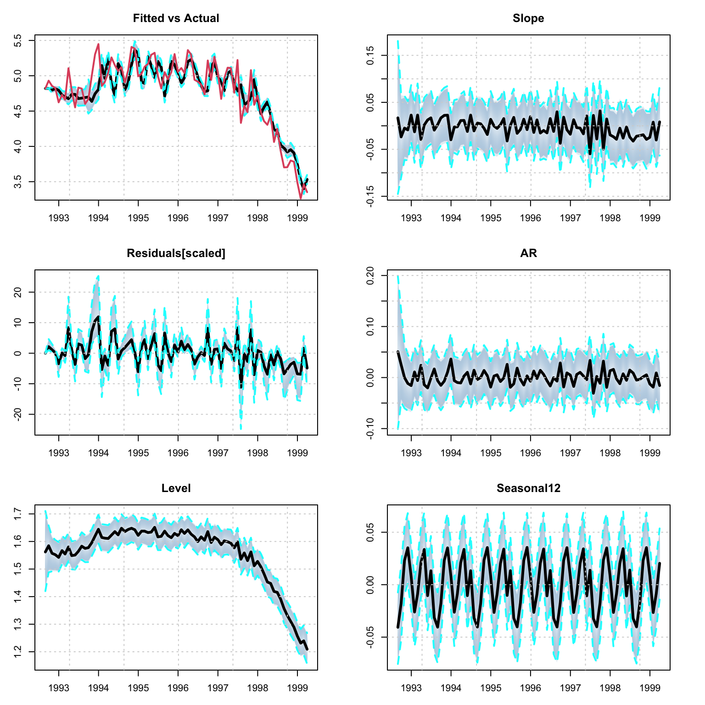
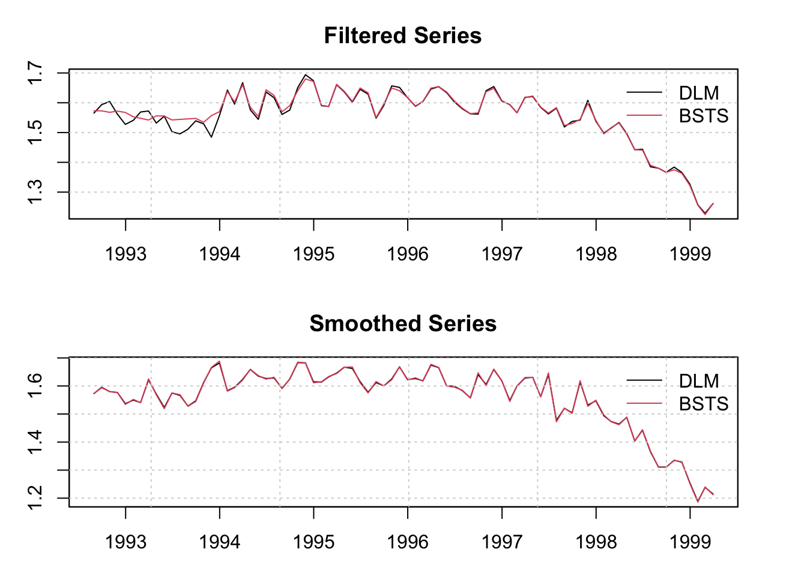
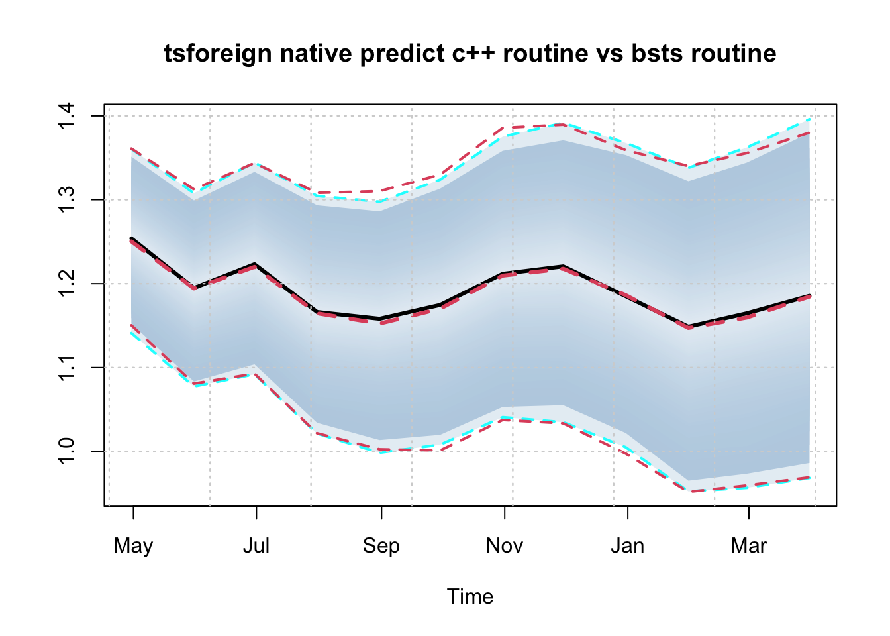
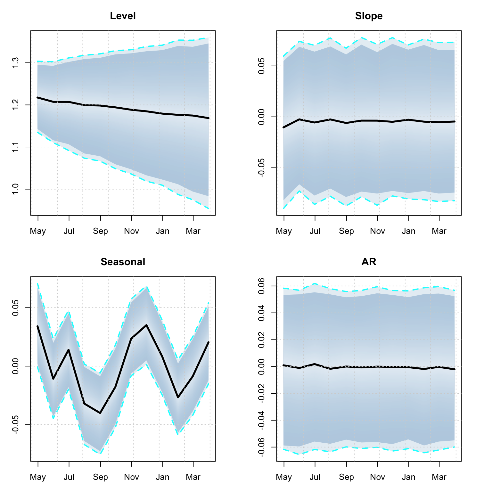

Chapter 8 tsforeign package
8.1 Introduction
The tsforeign package provides custom wrappers for the auto.arima function from the forecast package of (Hyndman et al. 2020) package and the bsts method from bsts package of (Scott 2020), with methods for estimation, some diagnostics and prediction. This package may be extended in future to provide wrappers for other interesting models. For the bsts model, we have also made use of the tsconvert method from the tsmethods package to convert the output of the model to one conforming to the required inputs of the dlm package, for which we provide an example in the demonstration section.
Since both of those packages have their own vignettes and documentation, we proceed here directly into a demonstration of the functionality.
8.2 arima model
The entry point for the arima model is the arima_modelspec function
suppressPackageStartupMessages(library(tsforeign))
library(xts)
library(tsaux)
args(arima_modelspec)## function (y, xreg = NULL, frequency = NULL, seasonal = FALSE,
## seasonal_type = "regular", lambda = NULL, seasonal_harmonics = NULL,
## lambda_lower = 0, lambda_upper = 1.5, ...)
## NULLwhich allows for both regular and trigonometric seasonality, with additional auto.arima arguments passed to the \(\dots\) .
For the demonstration example, we’ll use the AirPassengers dataset after first converting it into an xts object:
air <- AirPassengers
dt <- future_dates(as.Date("1948-12-31"), "months", length(air))
air <- xts(as.numeric(air), dt)
spec <- arima_modelspec(y = air, frequency = 12, seasonal_type = "regular", seasonal = TRUE, lambda = NA)
mod <- estimate(spec)
summary(mod)## ARIMA(0,1,1)(0,1,1)[12]
## ------------------------
## Estimate Std.Error t value Pr(>|t|)
## ma1 -0.4018 0.08964 -4.482 7.381e-06
## sma1 -0.5569 0.07310 -7.619 2.554e-14
##
## sigma : 0.037
##
## AIC BIC AICc
## -483.31 -474.69 -483.13
##
## MAPE MASE MSLRE BIAS
## 0.0262 0.2297 0.0012 0## n no.pars LogLik AIC BIC AICc MAPE MASE
## 1 131 2 244.6574 -483.3147 -474.6891 -483.1258 0.02623633 0.2297063
## MSLRE BIAS
## 1 0.001228422 4.059721e-05
The predict function generates a predictive distribution via simulation and returns an object of class tsmodel.predict:

Additionally, there is also a backtest method:
## horizon variable MAPE MSLRE BIAS n MIS[0.02] MIS[0.1]
## 1: 1 y 0.02350838 0.0009487283 0.003706631 72 75.63536 58.16644
## 2: 2 y 0.02823440 0.0013786515 0.006312084 71 78.31743 64.32781
## 3: 3 y 0.03297864 0.0018391489 0.008307571 70 93.27225 75.69191
## 4: 4 y 0.03709349 0.0023076325 0.009706971 69 116.93308 86.36686
## 5: 5 y 0.03859823 0.0024726785 0.011553894 68 123.57655 90.79089
## 6: 6 y 0.04181438 0.0027870929 0.013224976 67 128.23273 95.80723
## 7: 7 y 0.04406943 0.0031064555 0.015669258 66 139.00076 100.76296
## 8: 8 y 0.04535357 0.0031950824 0.018474240 65 139.93516 105.38304
## 9: 9 y 0.04686415 0.0033958718 0.020592314 64 146.17553 113.46859
## 10: 10 y 0.04911117 0.0037472561 0.023934309 63 153.69261 119.69767
## 11: 11 y 0.04989690 0.0038712908 0.026049580 62 164.13428 123.97936
## 12: 12 y 0.05261114 0.0041906831 0.027682026 61 168.74715 130.534328.3 bsts model
The bsts package of (Scott 2020) provides functions for fitting Bayesian structural time series models. The entry point in our wrapper is the bsts_modelspec function:
## function (y, xreg = NULL, frequency = NULL, differences = 0,
## level = TRUE, slope = TRUE, damped = FALSE, seasonal = FALSE,
## seasonal_frequency = 4, ar = FALSE, ar_max = 1, cycle = FALSE,
## cycle_frequency = NULL, cycle_names = NULL, seasonal_type = "regular",
## lambda = NULL, lambda_lower = 0, lambda_upper = 1, seasonal_harmonics = NULL,
## distribution = "gaussian", ...)
## NULLwhich provides a rich set of options such as degree of differencing19, a sparse AR component, sparse regressors, regular or trigonometric seasonal components (including multiple seasonal), cyclical components and the Box Cox transformation. Once an object is estimated, and all required components have been generated, any additional methods on the estimated component are performed directly by custom written functions in the tsforeign package.
For the demonstration we’ll use the priceunits dataset. Once a series is estimated, the resulting MCMC draws are converted to an mcmc object from the coda package of [R-coda] in order to provide a nice summary report.
data("priceunits", package = "tsdatasets")
spec <- bsts_modelspec(y = priceunits[1:80,1], frequency = 12, differences = 0, level = T, slope = T, damped = T, seasonal = T,
seasonal_frequency = 12, ar = T, ar_max = 3, lambda = 0)
mod <- estimate(spec, n_iter = 2000, trace = FALSE)
summary(mod)##
## Iterations = 1:2000
## Thinning interval = 1
## Number of chains = 1
## Sample size per chain = 2000
##
## 1. Empirical mean and standard deviation for each variable,
## plus standard error of the mean:
##
## Mean SD Naive SE Time-series SE Prob[Include]
## obs.sigma 0.0116617 0.006260 1.400e-04 0.0006759 1.0000
## level.sigma 0.0043762 0.005393 1.206e-04 0.0018394 1.0000
## slope.sigma 0.0326992 0.005601 1.252e-04 0.0004317 1.0000
## slope.ar -0.3941451 0.223029 4.987e-03 0.0170276 1.0000
## seasonal12.sigma 0.0009405 0.001783 3.987e-05 0.0004350 1.0000
## ar1 0.0253365 0.212130 4.743e-03 0.0130899 0.6740
## ar2 0.0339851 0.133642 2.988e-03 0.0098030 0.4270
## ar3 -0.0053966 0.051169 1.144e-03 0.0020989 0.2235
## ar3.sigma 0.0285592 0.006545 1.464e-04 0.0003267 1.0000
##
## 2. Quantiles for each variable:
##
## 2.5% 25% 50% 75% 97.5%
## obs.sigma 4.859e-03 0.0078972 0.0105516 0.0141568 0.023304
## level.sigma 6.799e-05 0.0004075 0.0021138 0.0058649 0.019396
## slope.sigma 2.225e-02 0.0288842 0.0324754 0.0365164 0.044140
## slope.ar -7.650e-01 -0.5534112 -0.4187680 -0.2625470 0.117374
## seasonal12.sigma 9.034e-05 0.0002319 0.0004469 0.0008238 0.007463
## ar1 -4.026e-01 -0.0580787 0.0000000 0.1195511 0.507647
## ar2 -1.914e-01 0.0000000 0.0000000 0.0196223 0.430215
## ar3 -1.476e-01 0.0000000 0.0000000 0.0000000 0.089121
## ar3.sigma 2.109e-02 0.0254464 0.0280054 0.0309178 0.037930
##
##
## Harvey's Goodness of Fit Statistic: 0.2179459
##
## MAPE MASE MSLRE BIAS
## 0.0371 0.4692 0.0023 -1e-04## n no.pars MAPE MASE MSLRE BIAS
## 1 80 9 0.0370866 0.4692441 0.002276552 -6.369941e-05
The decomposition of the model into it’s fitted components is done via the tsdecompose method. However, note that the bsts routine returns the smoothed component states, not the filtered ones.
## List of 5
## $ Level : 'tsmodel.distribution' num [1:1985, 1:80] 1.61 1.72 1.62 1.61 1.58 ...
## ..- attr(*, "dimnames")=List of 2
## .. ..$ : NULL
## .. ..$ : chr [1:80] "1992-08-31" "1992-09-30" "1992-10-31" "1992-11-30" ...
## ..- attr(*, "date_class")= chr "Date"
## $ Slope : 'tsmodel.distribution' num [1:1985, 1:80] -0.0282 -0.1905 -0.031 -0.0453 -0.0746 ...
## ..- attr(*, "dimnames")=List of 2
## .. ..$ : NULL
## .. ..$ : chr [1:80] "1992-08-31" "1992-09-30" "1992-10-31" "1992-11-30" ...
## ..- attr(*, "date_class")= chr "Date"
## $ AR : 'tsmodel.distribution' num [1:1985, 1:80] 0.000106 -0.110461 -0.044147 0.026621 0.03742 ...
## ..- attr(*, "dimnames")=List of 2
## .. ..$ : NULL
## .. ..$ : chr [1:80] "1992-08-31" "1992-09-30" "1992-10-31" "1992-11-30" ...
## ..- attr(*, "date_class")= chr "Date"
## $ X : NULL
## $ Seasonal12: 'tsmodel.distribution' num [1:1985, 1:80] -0.0447 -0.0369 -0.0261 -0.044 -0.0539 ...
## ..- attr(*, "dimnames")=List of 2
## .. ..$ : NULL
## .. ..$ : chr [1:80] "1992-08-31" "1992-09-30" "1992-10-31" "1992-11-30" ...
## ..- attr(*, "date_class")= chr "Date"Once bsts model is estimated, we can convert it to a dlm object20 using either the mean values of the parameters and initial states, or a specific draw using the tsconvert method.
library(dlm)
dlm_model <- tsconvert(mod, to = "dlm", draw = "mean", burn = bsts::SuggestBurn(0.1, mod$model))
str(dlm_model)## List of 6
## $ m0: num [1:17] 1.5639 0.01734 -0.00434 -0.04057 -0.03086 ...
## $ C0: num [1:17, 1:17] 1e+07 0e+00 0e+00 0e+00 0e+00 0e+00 0e+00 0e+00 0e+00 0e+00 ...
## $ FF: num [1, 1:17] 1 0 0 1 0 0 0 0 0 0 ...
## $ V : num [1, 1] 0.0114
## $ GG: num [1:17, 1:17] 1 0 0 0 0 0 0 0 0 0 ...
## $ W : num [1:17, 1:17] 0.0044 0 0 0 0 ...
## - attr(*, "class")= chr "dlm"filtered_dlm <- dlmFilter(log(priceunits[1:80,1]), dlm_model)
smoothed_dlm <- dlmSmooth(filtered_dlm)
smoothed_series <- xts((dlm_model$FF %*% t(smoothed_dlm$s))[1,-1], index(priceunits)[1:80])
par(mfrow = c(2,1), mar = c(3,3,3,3))
plot(as.zoo(filtered_dlm$f), type = "l", main = "Filtered Series", ylab = "")
lines(as.zoo(fitted(mod, raw = TRUE)), col = 2)
grid()
legend("topright", c("DLM","BSTS"), col = 1:2, lty = 1, bty = "n")
plot(as.zoo(smoothed_series), type = "l", main = "Smoothed Series", ylab = "")
lines(as.zoo(fitted(mod, raw = TRUE, type = "smoothed")), col = 2)
grid()
legend("topright", c("DLM","BSTS"), col = 1:2, lty = 1, bty = "n")
We compare the predictive distribution of the predicted object from calling the predict method of the tsforeign package and that of the bsts package. Note that there are a lot more arguments which can be passed to the predict routine, including user overrides for the last state means and the posterior means of the parameters (see the documentation for more details).
p1 <- predict(mod, h = 12)
# BSTS method
p2 <- bsts::predict.bsts(mod$model, horizon = 12)
# convert predictive distribution to tsmodel.distribution for comparison
p2d <- p2$distribution
colnames(p2d) <- colnames(p1$distribution)
class(p2d) <- "tsmodel.distribution"
plot(log(p1$distribution), main = "tsforeign native predict c++ routine vs bsts routine")
plot(p2d, add = TRUE, median_color = 2, interval_color = 2, median_type = 2)
A predicted object can also be decomposed into it’s structural components, something we are able to do because of the custom predict routine since bsts does not return this information.
td <- tsdecompose(p1)
par(mfrow = c(2,2), mar = c(3,3,3,3))
plot(td$Level, main = "Level")
plot(td$Slope, main = "Slope")
plot(td$Seasonal12, main = "Seasonal")
plot(td$AR, main = "AR")
References
Hyndman, Rob, George Athanasopoulos, Christoph Bergmeir, Gabriel Caceres, Leanne Chhay, Mitchell O’Hara-Wild, Fotios Petropoulos, Slava Razbash, Earo Wang, and Farah Yasmeen. 2020. Forecast: Forecasting Functions for Time Series and Linear Models. https://CRAN.R-project.org/package=forecast.
Scott, Steven L. 2020. Bsts: Bayesian Structural Time Series. https://CRAN.R-project.org/package=bsts.